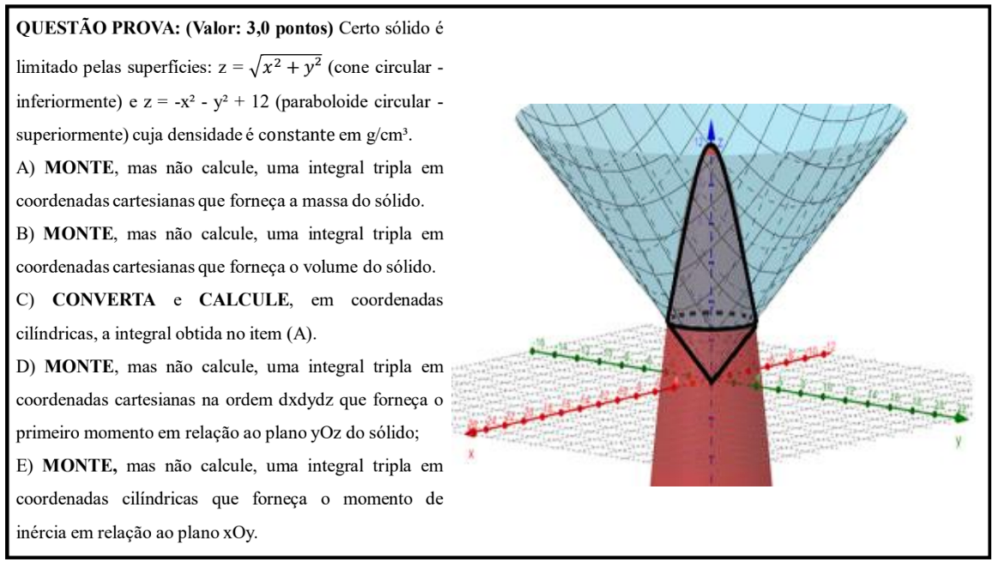

(Valor: 3,0 pontos) Certo sólido é limitado pelas superfícies: \(z = \sqrt{x^2 + y^2}\) (cone circular - inferiormente) e \(z = -x^2 - y^2 + 12\) (paraboloide circular - superiormente) cuja densidade é constante em g/cm³.
A) MONTE, mas não calcule, uma integral tripla em coordenadas cartesianas que forneça a massa do sólido.
B) MONTE, mas não calcule, uma integral tripla em coordenadas cartesianas que forneça o volume do sólido.
C) CONVERTA e CALCULE, em coordenadas cilíndricas, a integral obtida no item (A).
D) MONTE, mas não calcule, uma integral tripla em coordenadas cartesianas na ordem dxdydz que forneça o primeiro momento em relação ao plano yOz do sólido;
E) MONTE, mas não calcule, uma integral tripla em coordenadas cilíndricas que forneça o momento de inércia em relação ao plano xOy.
Antes de montar qualquer integral, o passo mais importante é entender a geometria do problema. O nosso sólido está "preso" entre duas superfícies:
O sólido, então, parece um "sorvete de casquinha", onde o cone é a casquinha e o paraboloide é a bola de sorvete por cima.
Para definir os limites de integração, precisamos saber onde essas duas superfícies se encontram. A interseção ocorre quando os valores de \(z\) são iguais: \(\sqrt{x^2 + y^2} = 12 - x^2 - y^2\).
Usando a relação \(r^2 = x^2 + y^2\) (de coordenadas cilíndricas), a equação se simplifica para:
\(r = 12 - r^2 \implies r^2 + r - 12 = 0 \implies (r+4)(r-3) = 0\)
Como o raio \(r\) não pode ser negativo, a única solução válida é \(r=3\). Isso significa que a projeção do nosso sólido no plano \(xOy\) é um disco com equação \(x^2 + y^2 \le 9\). A altura \(z\) da interseção é \(z = r = 3\).
A fórmula da massa \(M\) com densidade constante \(\rho\) é \(M = \iiint_E \rho \, dV\). Os limites em coordenadas cartesianas \((dz \, dy \, dx)\) são:
A integral para a massa é:
O volume é um caso especial da massa com \(\rho=1\). Os limites são idênticos.
Convertemos para coordenadas cilíndricas \((r, \theta, z)\), onde \(dV = r \, dz \, dr \, d\theta\).
A integral convertida é:
1. Integral em \(z\): \(\int_{r}^{12-r^2} \rho r \, dz = \rho r [z]_{r}^{12-r^2} = \rho r(12 - r - r^2) = \rho(12r - r^2 - r^3)\)
2. Integral em \(r\): \(\int_{0}^{3} \rho (12r - r^2 - r^3) \, dr = \rho \left[ 6r^2 - \frac{r^3}{3} - \frac{r^4}{4} \right]_{0}^{3} = \rho \left( 54 - 9 - \frac{81}{4} \right) = \rho \left( \frac{99}{4} \right)\)
3. Integral em \(\theta\): \(\int_{0}^{2\pi} \rho \frac{99}{4} \, d\theta = \rho \frac{99}{4} [\theta]_{0}^{2\pi} = \frac{99 \pi \rho}{2}\)
A massa do sólido é \(M = \frac{99\pi\rho}{2}\) g.
O primeiro momento \(M_{yz}\) é dado por \(\iiint_E x \cdot \rho \, dV\). A ordem \(dx\,dy\,dz\) requer que a integral seja dividida em duas partes, pois a forma da secção transversal do sólido muda em \(z=3\).
Parte 1 (\(0 \le z \le 3\), região do cone): A secção é um disco \(x^2+y^2 \le z^2\).
Parte 2 (\(3 \le z \le 12\), região do paraboloide): A secção é um disco \(x^2+y^2 \le 12-z\).
A integral completa é a soma das duas partes:
O momento de inércia em relação ao plano \(xOy\) (\(I_{xy}\)) usa o quadrado da distância a esse plano, que é \(z^2\). A fórmula é \(I_{xy} = \iiint_E \rho z^2 \, dV\).
Usando os limites em coordenadas cilíndricas do item C, a montagem da integral fica: